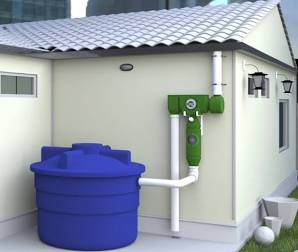

Cuidar do planeta é responsabilidade de todos!

A água é o recurso mais precioso do nosso planeta, mas muitas vezes a tratamos como se fosse infinita. O reuso de água surge como uma solução inteligente e vital para enfrentar a escassez hídrica global. Essa prática consiste em aproveitar a água que já foi utilizada em processos domésticos ou industriais, tratando-a adequadamente para que possa ser usada novamente em atividades que não exigem potabilidade, como a rega de jardins, lavagem de pátios e descargas sanitárias.
Além de reduzir drasticamente a demanda sobre os nossos mananciais e rios, o reuso alivia o sistema de esgotamento sanitário e gera uma economia significativa para as famílias e empresas. É uma forma de fecharmos o ciclo do consumo, imitando a própria natureza que, através do ciclo da chuva, recicla a água incessantemente. Ao implementarmos sistemas de captação de água da chuva ou de tratamento de águas cinzas, estamos exercendo uma cidadania consciente e responsável.
Adotar o reuso de água é mudar nossa percepção sobre o desperdício. É entender que cada gota conta e que a tecnologia, quando aliada à preservação, tem o poder de garantir que as futuras gerações também possam desfrutar desse recurso essencial. É um compromisso com a vida e com o equilíbrio do nosso ecossistema, transformando o modo como interagimos com o meio ambiente no nosso dia a dia.